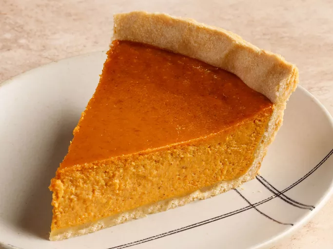

Go back
Pie recipe

Description
This sweet potato pie recipe was shared with me by a special friend in Atlanta, GA. It has long been a favorite, and everyone who tastes it says it is the best they've ever had!
Ingredients
Believe it or not, you can make this bakery-worthy pumpkin pie with just five easy-to-find ingredients:
- Pie Crust:Use a store-bought crust or make your own with our top-rated Butter Flaky Pie Crust recipe.
- Pumpkin Puree:This simple pumpkin pie recipe calls for a 16-ounce can of pumpkin puree. Of course, you can puree your own pumpkin if you want to go the homemade route.
- Sweetened Condensed Milk: A can of sweetened condensed milk adds irresistible flavor and creates a rich, smooth texture.
- Eggs:Two whole eggs lend richness and help bind the filling together
How to prepare it
You'll find the full, step-by-step recipe below — but here's a brief overview of what you can expect when you make this easy pumpkin pie:
- Mix up the filling and pour it into the pie crust.
- Bake at 425 degrees F for about 15 minutes, then at 350 degrees F until the filling is set.